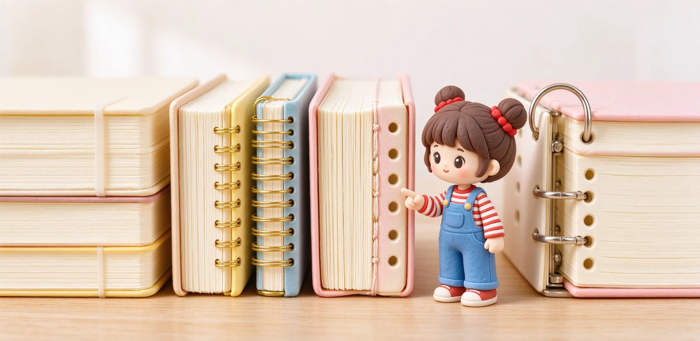

語意摘要：常見筆記本裝訂有五種：騎馬釘最便宜但難平攤、膠裝最常見但翻久可能掉頁、線圈可 360 度反折但有金屬突起、穿線裝訂（如 MD）能完全平攤又耐用、活頁可自由抽換順序但有孔距限制。選哪一種，取決於你要好不好攤平、能不能拆頁、以及耐不耐翻。
裝訂為什麼這麼重要
多數人挑筆記本只看封面與內頁，忽略裝訂。但你實際寫字時最常遇到的抱怨，其實都跟裝訂有關：本子打開一直彈起來、靠近書溝的地方寫不到、翻一翻頁就掉下來、想抽一頁出來分享卻撕不乾淨。
裝訂就是把一張張紙固定成一本的方式。它決定了三件事：能不能平攤好寫、能不能拆頁、以及翻久了會不會散。先認識這幾種做法的特性，你下次翻開本子就知道自己在翻哪一種。
五種裝訂一次看懂
| 裝訂 | 怎麼固定 | 平攤 | 拆頁 | 缺點 |
|---|---|---|---|---|
| 騎馬釘 | 兩根鐵釘釘書背 | 差 | 可撕但會破 | 頁數不能多，翻久釘處裂 |
| 膠裝 | 書背刷膠黏住 | 中等 | 撕了會破 | 翻久膠老化可能掉頁 |
| 線圈 | 金屬或塑膠圈穿孔 | 可 360 度反折 | 可拆下 | 有突起、寫字靠邊卡手 |
| 穿線裝訂 | 線穿疊好的紙帖 | 可完全平攤 | 撕了會破 | 成本較高 |
| 活頁 | 金屬夾＋打孔紙 | 可平攤 | 自由抽換 | 有孔距限制、不能隨便寫到邊 |

平裝與膠裝：最常見但有眉角
我們說的「平裝」通常指膠裝：一疊紙在書背刷上一層膠，黏上封面。台灣多數校園筆記本、商業筆記本都是這種。它便宜、乾淨、頁數可以做很多，缺點是很難完全平攤，而且膠會隨時間老化，翻個幾十次後靠書背的頁可能鬆脫。
騎馬釘則是像雜誌一樣用兩根鐵釘從中間釘下去，幾十元的薄本筆記本常用。它很難攤平，頁數一多中間會鼓起來，適合頁數少、寫得快消耗快的筆記。
線圈與穿線：平攤派的兩條路
線圈筆記本（圈裝）
用一條連續的金屬或塑膠圈把紙穿起來，最大優點是可以 360 度反折、拿在單手寫也不會彈開。缺點是背後那圈凸出來，放桌子上會墊高，寫靠近左邊時手腕會頂到圈。
穿線裝訂（如 MD 筆記本）
把紙一帖一帖用線縫起來，是高級筆記本常用的做法。它能完全平攤、翻到哪頁都伏貼，又比膠裝耐翻很多。MD 筆記本能一百八十度打開寫字不被書溝卡，靠的就是這種裝訂。
活頁：可以自由改順序的變形蟲
活頁（夾頁夾＋打孔紙）跟前面幾種最大的不同，是頁碼可以自由抽換：聽到一半發現這頁該放到別的主題，抽出來插進去就行。它適合需要長期整理、分類重組筆記的人，例如讀書計畫、專案資料。
代價是紙張必須打孔，寫字時不能貼近左側的孔；而且不同尺寸的孔數不同（B5 常見 26 孔、A5 20 孔、A4 30 孔），買錯尺寸裝不上去。活頁我們另外有一篇專門講。
怎麼依用途選裝訂
- 學生快速消耗、預算低 → 騎馬釘或膠裝校園筆記本。
- 會議筆記、想邊寫邊壓平 → 穿線裝訂或可平攤膠裝。
- 單手寫、常站著記 → 線圈（圈裝）。
- 需要分類、抽換、長期整理 → 活頁夾。
- 送禮、想顧質感與保存 → 穿線精裝或縫線軟皮。
常見問題 FAQ
什麼裝訂的筆記本可以完全平攤？
膠裝筆記本會掉頁嗎？
線圈筆記本有什麼缺點？
活頁一定比一般筆記本好嗎？
現場怎麼快速判斷一本能不能平攤？
資料來源與核實依據
- MDノート 製本（糸かがり綴じ、180°フラット）（MD PAPER PRODUCTS / MIDORI）
- キャンパスバインダー B5 26穴（活頁夾規格）（KOKUYO 公式オンラインショップ）
- キャンパスルーズリーフ B5 26穴 100枚（KOKUYO コクヨ）
相關文章推薦

筆記本怎麼選？尺寸、版型、用途與預算的抉擇順序
選筆記本順序搞反最容易後悔：先想你拿它來做什麼、每天帶不帶出門，再決定尺寸與版型，最後才看封面好不好看。

活頁紙與夾頁夾值得投資嗎？孔數、紙張與系統筆記規劃
活頁的核心價值是「可以抽換頁」，但代價是孔數要對、左側不能寫到邊、還要另外買補充紙；想清楚自己會不會真的分類重組再投資。

MD 筆記本為何經典？Midori 系列、奶油用紙與鋼筆適性解析
MD 筆記本勝在一個「穩」字：80g 奶油色 MD 用紙、穿線裝訂能完全平攤，鋼筆好寫又不張揚，難怪做了十年還是經典。